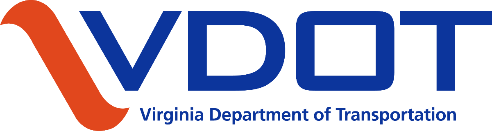
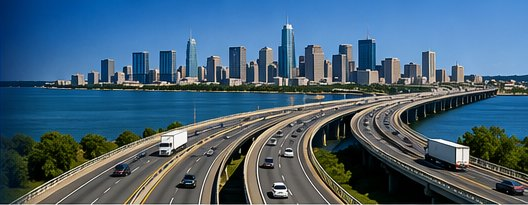
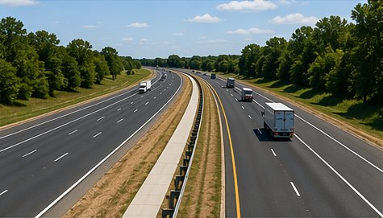
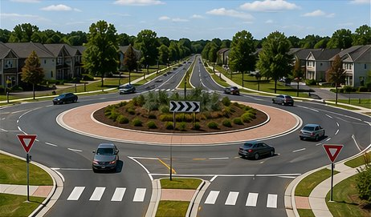
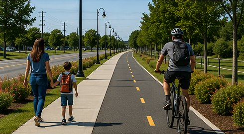
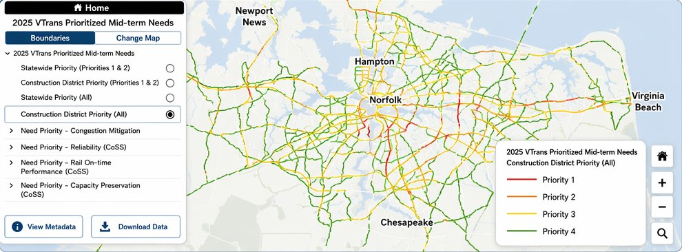

Visualizing Needs and Investments: A Dashboard Approach to Regional Planning
Keisha Wilkins
Transportation projects start
with planning




Hampton Roads
transportation challenges
Transportation study types
The transportation study process
today's needs and prepare for tomorrow.
How transportation planners determine
where to conduct a study
Monitor needs and conditions
Track data on traffic, safety, congestion, infrastructure, and system performance.
Use VTrans and other planning data
Analyze VTrans priorities, corridor studies, traffic data, and other planning resources to identify transportation needs and opportunities.
Engage local leaders and communities
Collaborate with local governments, community leaders, stakeholders, and the public to understand local needs, concerns, and priorities.
Review past studies, TPO studies, and plans
Review previous transportation studies, TPO planning efforts, comprehensive plans, and regional initiatives to identify recommendations, gaps, and opportunities for future study.

VTrans web maptransportation plan
VTrans is Virginia's long-range multimodal transportation plan.
- Identifies the state's most significant transportation needs.
- Prioritizes needs based on data, performance, and policy goals.
- Guides investment decisions and helps determine where studies are needed.
Challenges with the VTrans Webmap
To make informed decisions, we must look at prioritized needs alongside planned, underway, and completed projects.
Combining needs data with project information gives us the full picture—helping us invest where it's needed most and avoid duplicating planned improvements.
Five sources, many shapes
Mercury Blvd Pedestrian Improvements
Line on the LRS32 verticesElizabeth River Trail, Phase 3a
No line published1 pointMilitary Hwy Safety & Access Mgmt
Polygon 2 ft widea line in disguiseMooretown Rd / Lightfoot Rd
Polygon 300 ft widea blobMercury Boulevard (Route 258)
Stored as linesclosed polygon outlineI-64 at J. Clyde Morris Blvd
Only a lat / longstudy as a pointWhy SYIP locations vary
Snapped to the LRS
373 of 402 Hampton Roads SYIP lines sit exactly on the road centerline.
No centerline to snap to
The road is not in the LRS layer, so the line is drawn by hand.
Coarse sketch
A quick straight line, about 200 ft off the road it describes.
Default placeholders
The whole route instead of the project: 35 lines in Hampton Roads, 24 point-only, 59 areawide.
One buffer does not fit all
Fine drawing
#HB2.FY17 Longhill Rd WideningCoarse sketch
Signal Retiming ImprovementsHow we made the data uniform
2025 VTrans Prioritized Mid-term Needs
Define geographic levels
Statewide: Corridors of Statewide Significance and Safety.
Construction District: CoSS, Regional Networks, Safety and UDA (IEDA access).
Prioritize within each need
Every need is rated Low, Medium, High or Very High from its severity and the number of users affected.
Weigh and add them up
Category ratings are weighted and combined into one priority score for each location.
Adjust for influencing factors
Bridge and pavement condition, flooding and sea-level-rise exposure, and economically distressed communities adjust the score, which sets Priority 1 to 4.
A dashboard approach
The Priority Explorer puts the 2025 VTrans needs, SYIP, SMART SCALE, STARS and planning studies on one map, so a click on any road or place shows its priorities and every project there.
The clicker keeps working inside the demo: next and back step through each view
What the app is for
Answer a locality fast
Circle the location: priorities, needs and every past and planned project in seconds.
Reuse past studies
A completed STARS or Pathways study means data, outreach and early engineering already exist.
Shape a new idea
Draw the area to see which needs a project should target before it is scoped.
Find the gaps
Priority 1–2 roads with no project yet point to the next Project Pipeline or STARS candidates.
Check multimodal needs
Compare pedestrian, bicycle and transit needs with the bike/ped and transit projects in place.
Avoid duplication
See what is planned or underway before starting another study on the same corridor.
Prepare for meetings
Filter, sort and download the project list as a spreadsheet for any district or the whole state.
Next: better data at the source
Location-confidence flags show which SYIP records PMs could fix, and every new release rebuilds in one run.
Thank you
Saurav Parajuli · Keisha Wilkins
Questions?